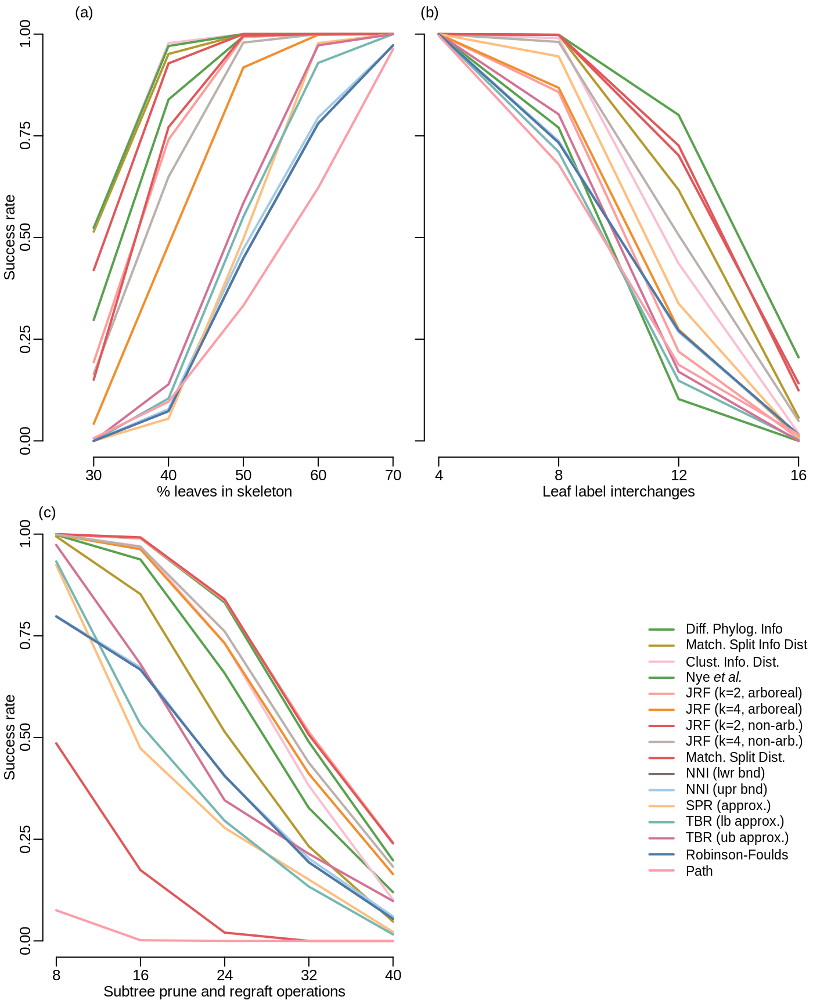

vignettes/Lin.Rmd
Lin.RmdDistance measurements can be used to identify clusters of similar trees. I used three approaches to generate clusters of similar trees, and tested each metric in its ability to recover these clusters (Yu Lin, Rajan, & Moret, 2012).
For the first test, I generated 500 datasets of 50 binary trees with n = 40 leaves. Each set of trees was created by uniformly sampling two k-leaf ‘skeleton’ trees, where k ranges from 0.3 n to 0.9 n. From each skeleton, 50 trees were generated by adding each of the remaining n – k leaves at a uniformly selected point on the tree.

Ranking: rank for each value of k and each clustering method, using lowest value in ties. Then average across all values of k and all clustering methods for each test.
| Test one | Test two | Test three | Mean rank | |
|---|---|---|---|---|
| paste(plain(“Nye”), italic(“et al.”)) | 4.00 | 3.425 | 3.14 | 3.52 |
| JRF (k=2, non-arb.) | 4.64 | 4.150 | 2.50 | 3.76 |
| Clust. Info. Dist. | 3.98 | 6.750 | 5.70 | 5.48 |
| Match. Split Info Dist | 4.22 | 4.800 | 9.06 | 6.03 |
| JRF (k=4, non-arb.) | 7.12 | 6.525 | 4.68 | 6.11 |
| JRF (k=2, arboreal) | 6.16 | 10.575 | 2.52 | 6.42 |
| JRF (k=4, arboreal) | 8.50 | 9.875 | 5.58 | 7.99 |
| Match. Split Dist. | 6.46 | 3.950 | 13.70 | 8.04 |
| Diff. Phylog. Info | 5.64 | 12.675 | 6.74 | 8.35 |
| SPR (approx.) | 11.40 | 8.650 | 12.44 | 10.83 |
| TBR (upr bnd) | 10.86 | 11.550 | 10.24 | 10.88 |
| NNI (upr bnd) | 12.36 | 9.975 | 10.62 | 10.98 |
| NNI (lwr bnd) | 13.00 | 10.125 | 11.12 | 11.41 |
| Robinson-Foulds | 13.00 | 10.075 | 11.18 | 11.42 |
| TBR (lwr bnd) | 11.16 | 12.100 | 12.14 | 11.80 |
| Path | 13.50 | 10.800 | 14.64 | 12.98 |
Yu Lin, Rajan, V., & Moret, B. M. E. (2012). A metric for phylogenetic trees based on matching. IEEE/ACM Transactions on Computational Biology and Bioinformatics, 9(4), 1014–1022. doi:10.1109/TCBB.2011.157